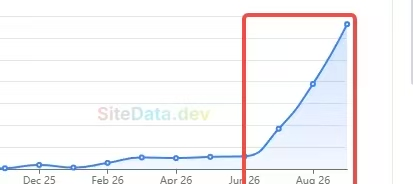
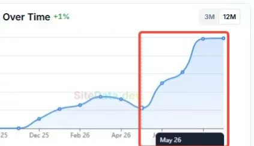

2026 年 11 月 3 日晚，小羊在群里贴出两张 SiteData 流量曲线，说老模型词「多坚持也能做」：要花时间，平静地坚持优化，持续或偶尔加外链，最后「熬死同行」。哥飞随后用一张 Google Search Console 截图补了另一条路——挑战大词，曝光足够大时，即使点击率偏低，新站六个月也能拿到十几万点击。
老词起量：多坚持，熬死同行
小羊没有说明这两张截图对应哪个站，只把它们归为「老模型词」。两张 SiteData 曲线走势相似：前期长时间贴着底部缓慢波动，到 2026 年年中前后开始明显抬升，之后持续走高。


他的原话很直接：多坚持也能做，要花时间；选老模型词，平静地坚持优化，持续或偶尔加外链，核心目标就是「熬死同行」。
优化什么：行为数据和内页
Dawn 追问主要优化什么，小羊答「行为数据和内页」。Dawn 继续问停留时长怎么提升、是不是靠试用，小羊只回了「让印度人排队」和「给用就不错了」两句，没有展开具体做法。
他补充说，别的技巧可以去研究数据好的同行；至于更多细节，「太多了讲不完的」。
哥飞：挑战大词的乐趣
哥飞的总结是「挑战大词的乐趣，水大鱼大，曝光足够大」。他贴出的 GSC 后台选了六个月范围：总点击 13.1 万，总曝光 499 万，每日曲线从 2026 年 5 月起明显抬升。
他自己的解释是：六个月拿到 500 万曝光，于是在点击率比较低的情况下，新站也拿到了十几万的点击。
原始对话
聊天记录（18 条）
参与者 4 人：小羊、Dawn、肃、哥飞 · 时间范围 2026年11月3日 20:15 至 2026年11月3日 20:33 · 原始 18 条，保留 18 条